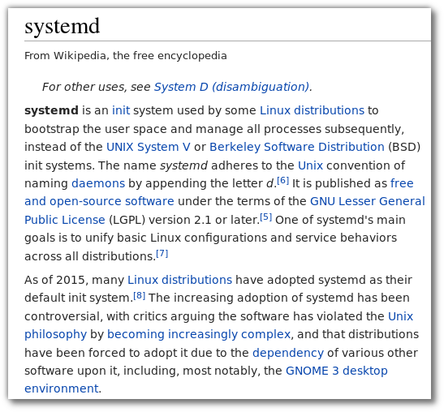
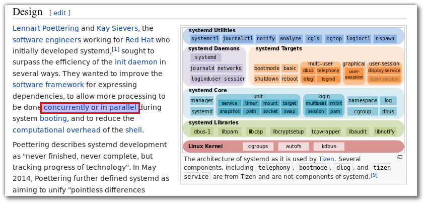

Understand systemd¶
Systemd¶
Framework¶
Basic Command¶
syntax¶
list units:
$ systemctl list-units
$ systemctl list-units --all
$ systemctl list-units --type service --all
start/stop service:
# systemctl start [name.service]
# systemctl stop [name.service]
# systemctl restart [name.service]
# systemctl reload [name.service]
$ systemctl status [name.service]
# systemctl is-active [name.service]
Service List¶
- Service: Linux Service
- Target: group of units
- Automount: filesystem auto-mountpoint
- Device: kernel device names, which you can see in sysfs and udev
- Mount: filesystem mountpoint
- Path: file or directory
- Scope: external processes not started by systemd
- Slice: a management unit of processes
- Snapshot: systemd saved state
- Socket: IPC (inter-process communication) socket
- Swap: swap file
- Timer: systemd timer.
Test¶
sudo su -
dnf install httpd
systemctl start httpd.service
-- หรือ --
systemctl start httpd.service
systemctl enable httpd.service
Unit Detail¶
systemctl cat httpd
systemctl list-dependencies httpd
Dependencies¶
systemctl list-dependencies sshd.service
Checking Unit Properties¶
systemctl show sshd.service
Masking and Unmasking Units¶
systemctl mask httpd
systemctl start httpd
systemctl unmask httpd
systemctl start httpd